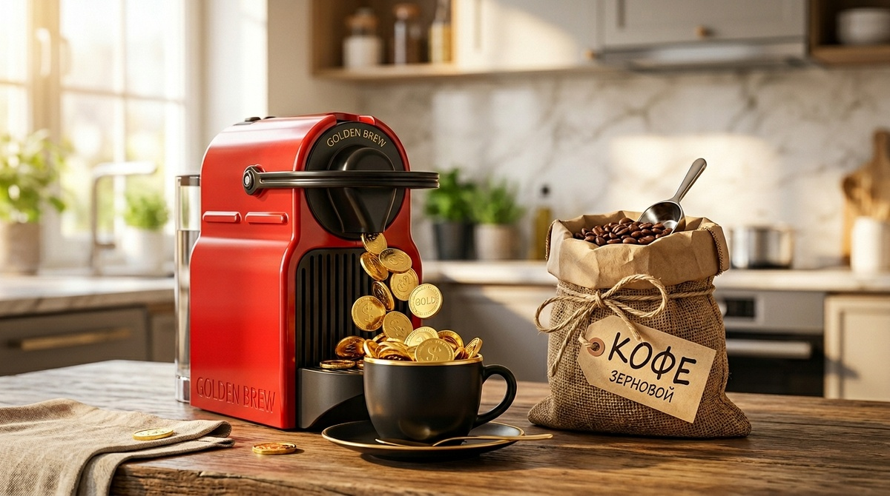
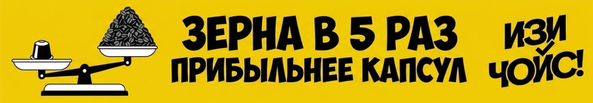
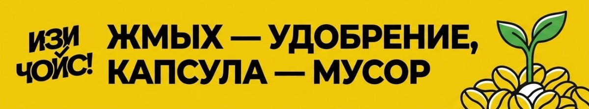
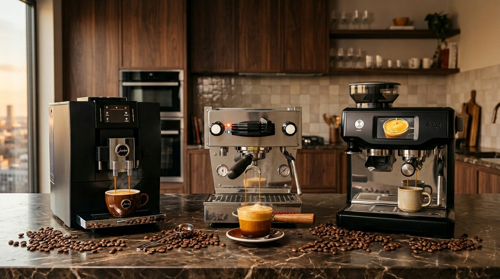

Вы заходите в магазин и видите чудо: стильная капсульная кофеварка всего за 4 990 рублей. Рядом стоит огромный кофейный автомат за 60 000. Выбор кажется очевидным: «Зачем платить больше, если и там, и там — кофе?». Вы приносите коробку домой, вставляете капсулу, и... в этот момент вы подписываете контракт на добровольную передачу части своей зарплаты кофейным корпорациям.
В 2026 году кофе — это не просто напиток, это финансовая модель. На территории «ИЗИ ЧОЙС!» мы разберемся, стоит ли удобство тех денег, которые за него просят, и когда «дорогое» на самом деле оказывается самым дешевым.

Капсульная кофеварка работает по тому же принципу, что и станки для бритья или струйные принтеры. Сама «железка» продается почти по себестоимости, чтобы вы точно её купили. Но вот «расходники» — это золотая жила. Например: Маша купила капсульную машину за копейки и теперь каждое утро чувствует себя аристократкой, выбирая между вкусами «Ванильное облако» и «Горный рассвет». Маша не замечает, что каждая капсула стоит 60–80 рублей. За год Маша «пропивает» три таких кофеварки, но продолжает радоваться «выгодной» покупке.
Давайте включим калькулятор. В одной капсуле — около 5–7 граммов кофе. Если килограмм хорошего зернового кофе стоит 1 500–2 000 рублей, то в пересчете на капсулы тот же килограмм обходится вам в 10 000 – 12 000 рублей.

Кофе начинает терять вкус через 15 минут после помола. В капсуле он может лежать месяцами. Чтобы он хоть чем-то пах, туда добавляют ароматизаторы. Например: Маша искренне верит, что пьет «натуральную карамель», хотя это просто химия, победившая здравый смысл. Кирилл же наслаждается ароматом свежемолотого зерна, от которого просыпаются даже соседи сверху.
Каждый раз, когда вы выкидываете пустую капсулу, где-то плачет одна маленькая планета. Переработка алюминиевых и пластиковых капсул — это квест, который проходят единицы. Зерновой же кофе оставляет после себя только жмых, который является отличным удобрением.

Выбор кофеварки — это тест на долгосрочное планирование. 4 золотых совета для кофейного бюджета: считайте «на дистанции», не ведитесь на дизайн, ищите альтернативы (воронка/гейзер) и цените свежесть.
